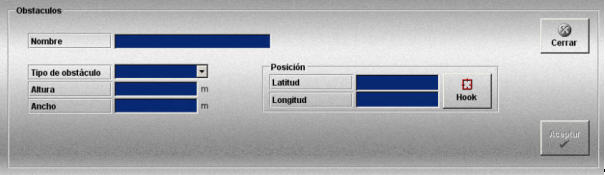

Obstáculos
La creación y edición de obstáculos se realiza mediante la siguiente ventana.

Para cada obstáculo se definen los siguientes datos:
Nombre: Nombre del obstáculo.
Formato: caracteres alfanuméricos.
Tipo de Obstáculo: Puede tomar los siguientes valores:
Altura: Altura del obstáculo.
Unidades: metros
Rango: 0.0 - 70.0
Ancho: Extensión del obstáculo.
Unidades: metros
Rango: 0.5 - 400.0
Posición: Posición en la que se sitúa el obstáculo. Puede ser introducida rellenando los campos Latitud y Longitud o situando el hook en la posición deseada y pulsando el botón Hook.
Latitud: Latitud correspondiente a la posición de la unidad fija.
Unidades: grados y minutos con formato ggºmm.mmm’N/S
Rango: 00º00.000’N a 89º59.999’N y 00º00.000’S a 89º59.999’S
Longitud: Longitud correspondiente a la posición de la unidad fija.
Unidades: grados y minutos con formato gggºmm.mmm’E/W
Rango: 000º00.000’E a 179º59.999’E y 00º00.000’W a 179º59.999’W